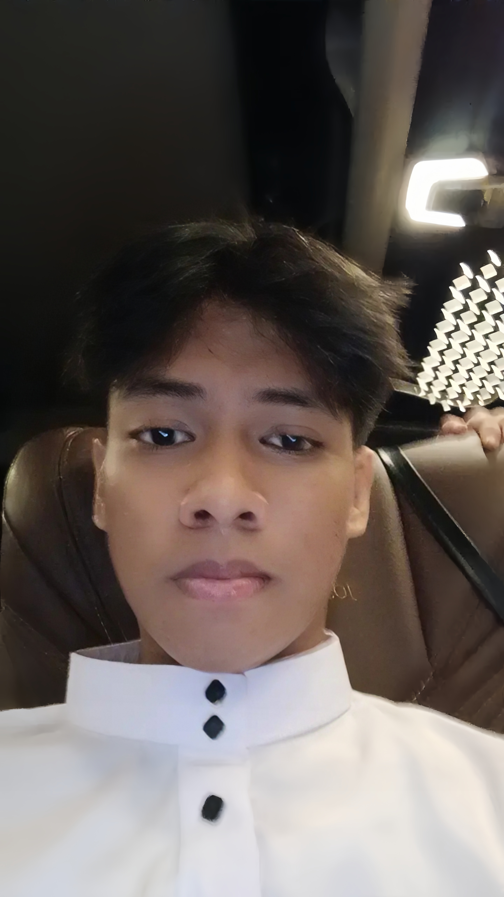

Biodata

Nama: Zulfikar Syauki Nur
NIM: 0110226033
TTL: Jakarta, 28 September 2007
Status: Mahasiswa Aktif
Email: zulfikarsaukinur@gmail.com
WhatsApp: 0855-1129-567
Alamat: Jalan Pangkalan Jati 2, Cinere, Depok
Tentang Saya
Saya merupakan mahasiswa aktif jurusan Teknik Informatika di STT Terpadu Nurul Fikri.
Saya memiliki ketertarikan pada dunia teknologi, pemrograman, dan desain web.
Saya senang mempelajari hal baru dan mengembangkan kemampuan diri.